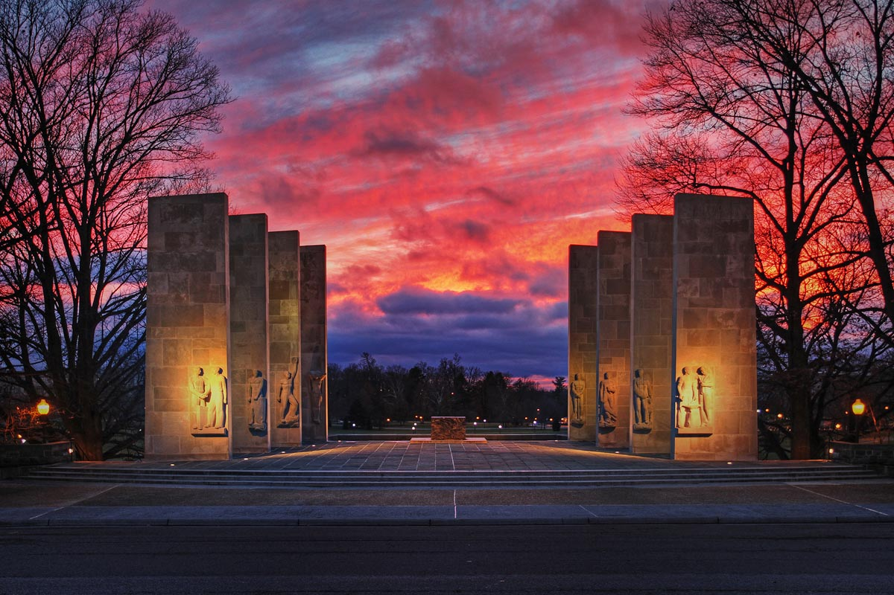

Start of Sophomore Year
As I entered my sophomore year at Virginia Tech, I was slightly apprehensive. With an increase in classes having to do with my major as well as finishing up some other required courses, I was nervous as to how my second year was going to go. From the very start of the fall semester, all of my professors throughout my five courses have been incredibly helpful. They have all looked out for my best interests and have truly been great to go to for advice in and out of the classroom. Much of the information that I have learned throuhgout this year will also be highly integral to my life in the professional world after graduation. With many of my communications classes moving from basic introduction courses to tangible real world projects, my work load has increased, but my interest in the subject material has also gone up greatly. This has been a truly influential semester as I continue to have a better focus on my major and new career opportunities as time as progressed. I have all of my professors to thank for continuing to guide and help me out as this year continued and I am excited to see how the semester ends.
